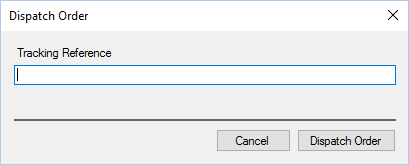

Once all items have been packaged up for dispatch, click the Dispatch button. Upon doing so
you will be presented with a new form which prompts for a tracking reference:

You can enter or scan a tracking reference at this point. The tracking reference, if set, will be
shown to the customer and using the delivery company website allow customers to track their
order.
The system can be configured to bypass the tracking reference for orders below a pre-determined
amount.
By clicking “Dispatch Order” the order will be marked as dispatched which can be viewed by the
customer online.